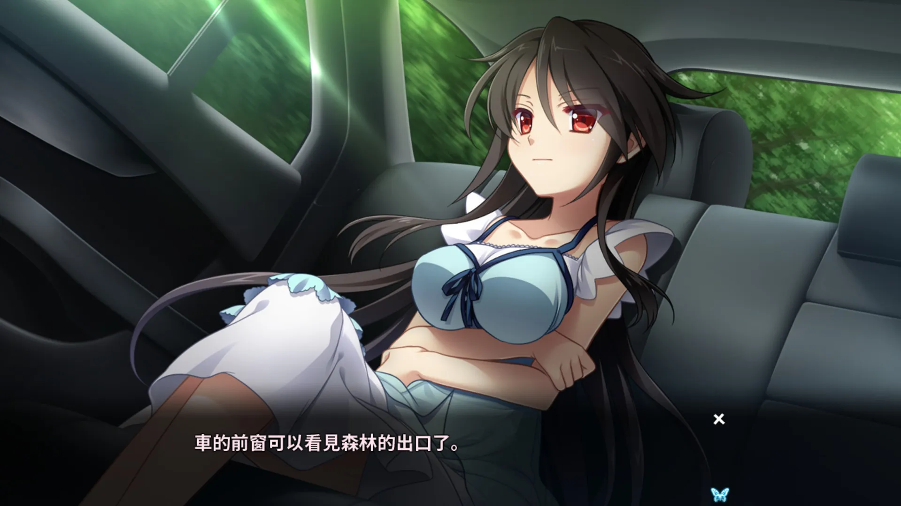
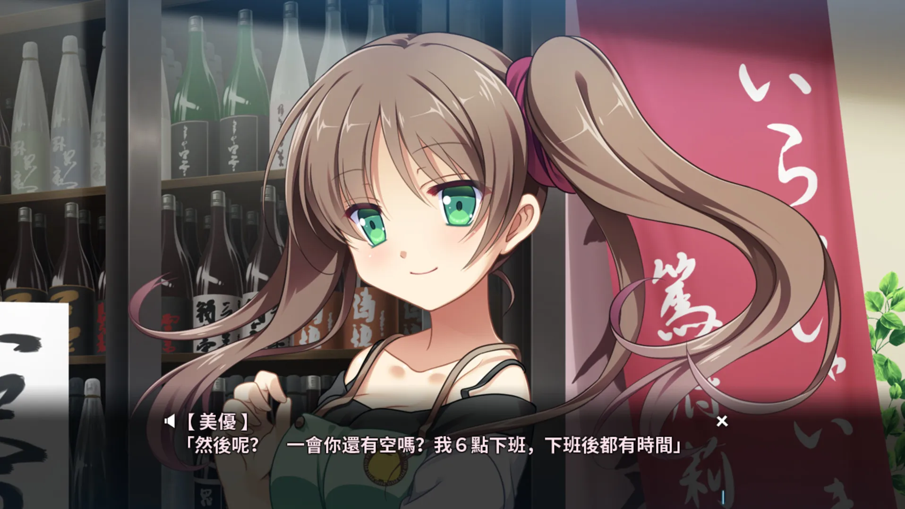
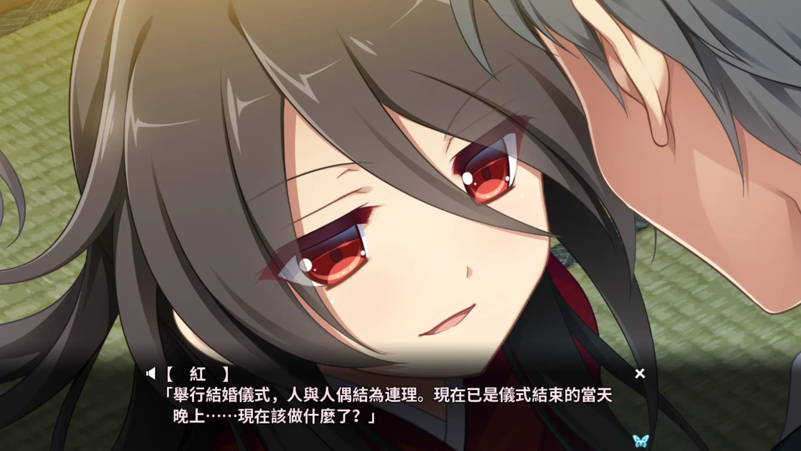
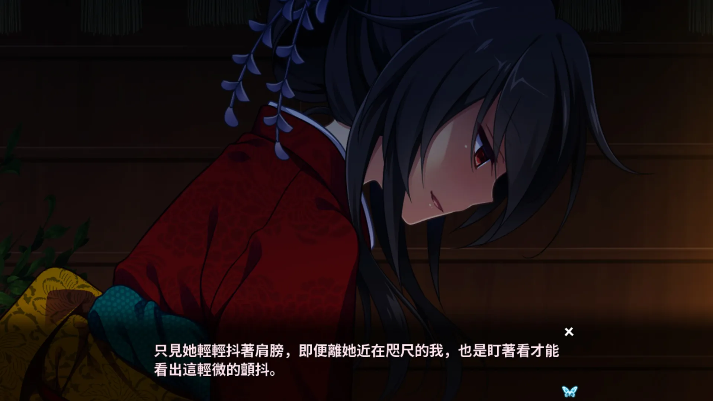
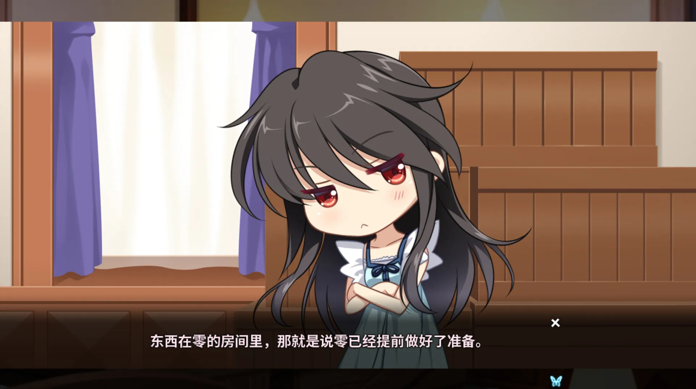
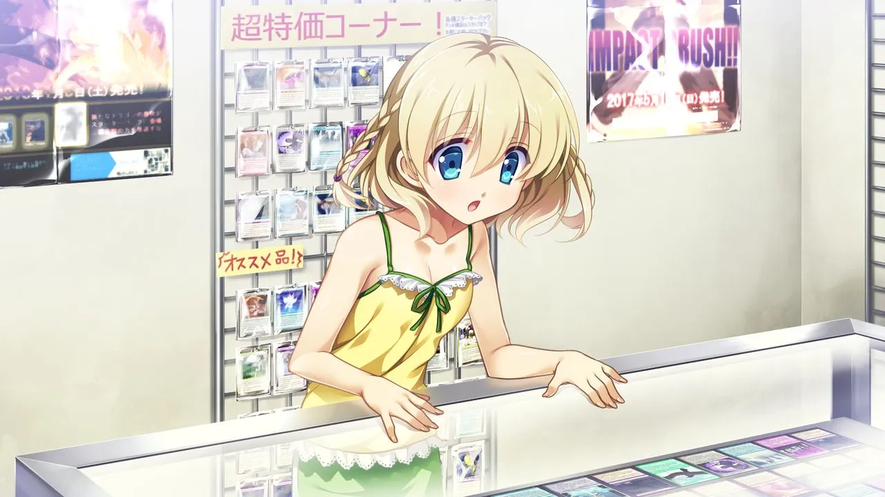
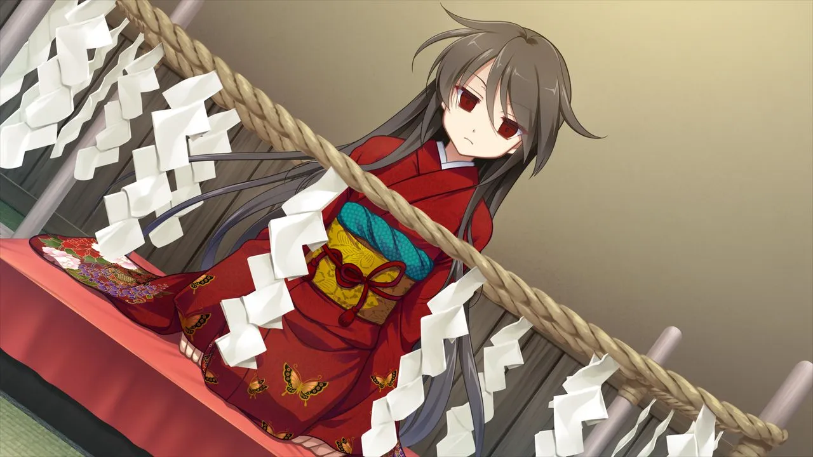

月影魅像-解放之羽-：爲被束縛的蝴蝶帶去解放
作者：如月零
被表妹如月零邀請，回到故鄉如月老宅參加「儀式」 的男主角，卯月誠一，在儀式上遭遇了一個看上去和如月零長得一模一樣的活人偶。

| 資訊一覽 | |
|---|---|
| 開發商 | Applique |
| 遊戲時長 | 25 小時 |
| 類型 | 懸疑，奇幻 |
| 難度 | 較低（能夠使用路線圖進行跳轉） |
| 分級 | R-18（性行爲描寫，血腥） |
故事
在外求學的卯月誠一，收到了算是表妹又算是青梅竹馬的女孩如月零的來信，
「父親想讓你給我們的儀式做個幫手。還有，你不想回來看看嗎？」
借着暑假，誠一回到了闊別三年的故鄉伊澤街。
回到如月家位於森林中的宅邸，前來迎接的如月零看起來還是一如既往的高冷。
誠一一開始還在擔心一無所知的自己能否勝任「儀式」的工作，
但是被告知只需要一直坐着就行之後，誠一便安下心來。
儀式上，誠一第一次認識到了如月家的家寶「活人偶」。
「什麼嘛，原來是你啊」誠一對眼前的如月零說道。
但是，事後誠一再向如月零詢問儀式的事情的時候，卻只得到了模棱兩可的回答，
就像兩人之間的關係隔了一層看不見的牆壁一樣。
登場人物
卯月 誠一
本作男主角，
屬於如月家系分支的一族，
精通機械，一碰到就能知道其內部原理。
凡事都有其存在的意義，就像機器通過零件的組合才能運轉起來一樣。
- 俺不太喜歡他的長相，還好在遊戲裏面不會經常看到。
如月 零
如月家的獨生女，
因爲討厭捲入各個家系之間的政治鬥爭，
對不熟的人都很冷淡。
我已經做好準備了，我將在這裏死去。- 有點傲嬌。
水無月 一葉
如月家的少女女僕，
也屬於如月家的旁系，
年齡比誠一小，就像妹妹一樣。
我會照顧好你的！- 喜歡玩課金抽卡遊戲，這可不是個好兆頭。
野上 美優
零和誠一的好朋友，曾經一起上學。
和如月家沒甚麼關係，所以不會像某些媚權之人去跪舔如月家，
只是覺得他們的宅子很大。
你終於回來了~- 明明很可愛，但是戲份較少。
一條 忍
誠一的好朋友，
對於誠一離開家鄉覺得很可惜。
在以前的吸血鬼事件中失去母親，想要查明真相。
- 標準基友
如月 紅
如月家的家寶，活人偶
性格很隨意，態度也是。
呵呵，有趣。- 問就是零假扮的。
遊戲 OP 動畫欣賞
俺覺得這首歌一般般，所以摺疊了。
點此展開 OP 動畫
動畫來自 Steam。
但是遊戲中的另一首插曲則是膾炙人口的諤諤次元世界名曲：
霜月はるか - イノチの灯し方
音訊來自網易雲音樂，自動加載已停用，播放時請注意音量。
歌詞唱出了遊戲中某個人物的內心，旋律也很有意境，這首歌是俺入坑遊戲的契機。
一句話點評
本作又是一部懸疑類劇情作品，但是並沒有之前介紹過的
櫻之社系列那麼恐怖獵奇，淡淡的恐怖氛圍恰到好處。雖然遊戲時長約爲 25 小時，但是因爲結局和路線有十幾個之多，
所以遊玩起來給玩家的體驗更短，
更像是一個短篇故事集。遊戲存在多個劇情鎖，解鎖後玩家可以
隨時通過路線圖在分支之間跳轉，就如同改變歷史一般，
隨着線路的改變，從不同的角度對故事進行
層層剝繭，最後解開謎團，整體安排十分優秀。另一方面，遊戲中各個人物的設定其實各有深意，
希望遊玩的各位能體會到高冷傲嬌的如月零對你的愛。遊戲畫面（含有 R-18 畫面）
   在猶豫是否要下載？
這裏有一個 5 分鐘的試玩實況。
錄像來自 Bitbucket。
資源與下載
Steam 商店爲官方多語言版。
R-18 補丁官網下載連結如下：
http://appendingpulse.jp/dl/tsukikage_patch/
日文原版資源（無需破解和 R-18 補丁）：
1
magnet:?xt=urn:btih:eb756a9d14690581a69ba320609a6d074db5749b文件名：月影のシミュラクル -解放の羽- 初回限定版 + 初回特典
種子來源： https://bt.orzx.im/view.php?id=110476
下載速度可能較慢，請耐心等待，，，
对于原创内容，文章作者保留所有权利。转载需要许可，如有需要请前往 🔗️Galgame 频道 留言。
另外，复制链接自由，请随意分享。
- 問就是零假扮的。
- 標準基友
目录
- 明明很可愛，但是戲份較少。
- 喜歡玩課金抽卡遊戲，這可不是個好兆頭。
- 有點傲嬌。